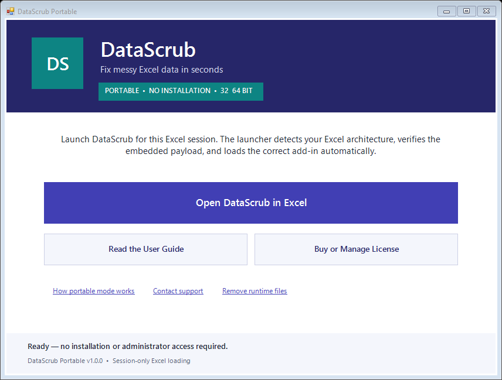
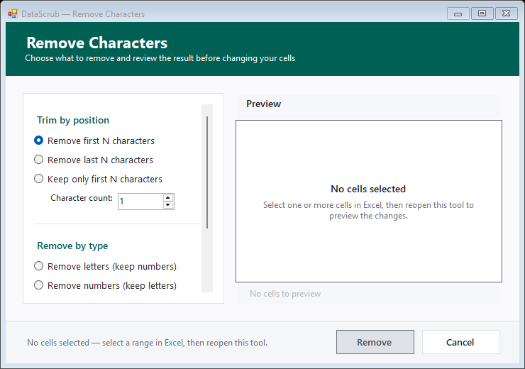
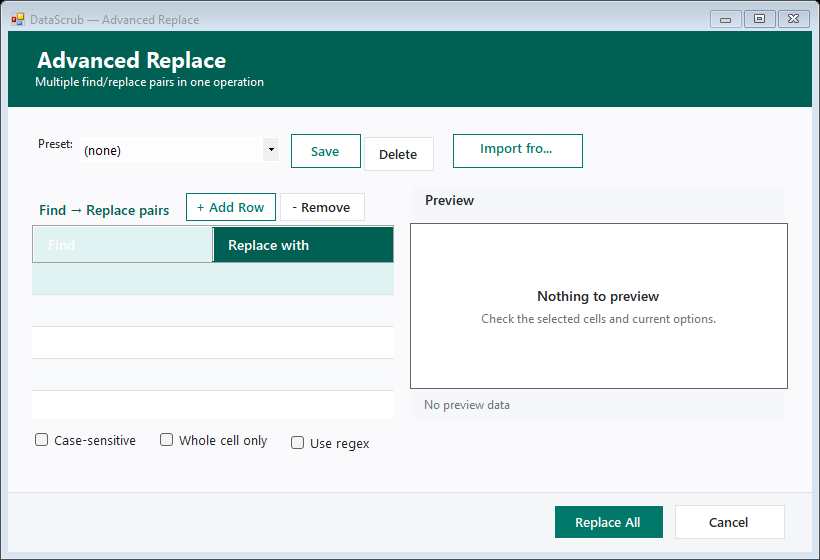
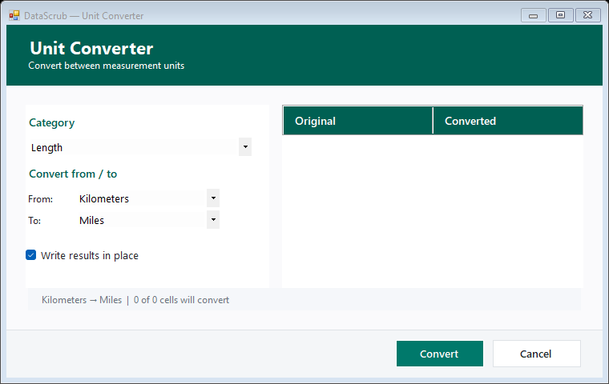

Complete feature guide for the portable Microsoft Excel add-in
VERSION 1.0 · 103 COMMANDS · 61 DIALOGS
103 ribbon commands in this guide. Search filters the feature tables.
Quick start
DataScrub is portable: one launcher contains the 32-bit and 64-bit add-ins plus this guide. It does not require administrator access or permanent installation.
Double-click DataScrub-Portable-v1.0.0.exe or the unversioned launcher inside the ZIP.
Select Open DataScrub in Excel. The launcher detects Excel’s architecture, verifies the embedded XLL, and loads it for this Excel session.
Open or create a workbook. Select only the cells, rows, or columns you intend to inspect or change.
Open the DataScrub ribbon tab. Begin with Health Scan or Quick Clean, or choose a focused command from a task menu.
Review the dialog preview and output location. Apply the change, check representative rows and totals, then save the workbook.
Three-day trial: merely opening the launcher or Excel does not start it. The 72-hour period begins when you invoke your first DataScrub feature and the licensing server confirms the device. Internet is required to start; after verification, the signed local cache supports up to 24 hours offline. Reinstalling, deleting local trial files, or moving the clock backward does not create a new trial and may require another online check.

The portable launcher is the customer entry point. “Open DataScrub in Excel” loads the matching XLL only for the current Excel session.
Ribbon map
The final ribbon uses eight workflow groups. Menus keep the full feature set available without crowding Excel’s ribbon.
After an update: close every Excel window and reopen DataScrub from the portable launcher. Excel caches RibbonX, so an already-open Excel process can continue showing the previous ribbon layout.
Safety, previews, outputs, and Undo
Indicator
Meaning
What to check
In place
Changes eligible selected cells.
Formulas are preserved or skipped unless the command explicitly converts/replaces them. Confirm the selection.
Output
Writes to a new or chosen destination.
Existing data triggers a warning and the actual destination is snapshotted for Undo.
Structural
Inserts or deletes whole rows/columns.
One-level structural Undo; unsafe protected, table, merged, last-column, or oversized cases are declined.
Read only
Scans, previews, reports, or opens help.
No workbook data changes until a separate Apply/Fix action.
DataScrub Undo is separate from Excel Undo. It reverses the most recent DataScrub operation and is tied to the originating workbook and worksheet.
Save a copy of important workbooks and test a representative range first.
“No cells selected” means cancel, select data in Excel, and reopen the tool.
Generator and formula-to-value commands intentionally replace selected content.
Verify leading-zero IDs, long numbers, decimal conventions, dates, formulas, totals, and row counts.
How to use DataScrub dialogs
Dialogs share an options area, preview/data area, status footer, Apply, and Cancel. They resize, support high-DPI scaling, and expose keyboard/accessibility names. Press Esc to cancel or Ctrl+Enter to apply when enabled.

Options + preview: Apply stays disabled when no cells would change and the preview explains the next step.

Multi-rule tools: configure rules, review output, then apply. Presets make repeatable cleanup easier.

Calculation tools: choose conversion and output behavior; formulas are protected from accidental flattening.
Start group
Command
What it does
Output and cautions
Health Scan
Scans the selection for blanks, whitespace/type inconsistencies, duplicates, formulas/errors, and other quality signals.
Read only first Select an issue before Fix Selected; issues needing choices direct you to a specialist tool.
Quick Clean
Runs a guided set of common whitespace, typography, case, and cleanup operations with one preview.
In place Review enabled steps; formulas are preserved.
Reusable Pipeline...
Builds, reorders, previews, saves, and runs a repeatable multi-step cleaning pipeline.
In place Saved pipelines store rules, not workbook data.
Undo DataScrub
Reverses the latest DataScrub values, formulas, formats, output, inserted column, or guarded deletion.
One level Return to the named workbook/sheet if prompted.
Text group
Whitespace
Command
What it does
Output and cautions
Clean All Whitespace
Trims edges, collapses repeated spaces, and removes line breaks and non-breaking spaces.
In place General cleanup for pasted/imported text.
Trim Leading & Trailing Spaces
Removes whitespace at the beginning/end while preserving internal spacing.
In place Useful before matching or deduplication.
Collapse Repeated Spaces
Converts runs of ordinary internal spaces to one.
In place Review fixed-width text.
Remove Every Space
Removes all ordinary spaces.
In place Intended for codes; words will join.
Remove Non-Breaking Spaces
Removes web/Word non-breaking spaces that break matching.
In place
Remove Line Breaks
Removes in-cell CR/LF and Alt+Enter line breaks.
In place Check whether a separating space is needed.
Letter Case
Command
What it does
Output and cautions
UPPER CASE
Converts letters to uppercase.
In place
lower case
Converts letters to lowercase.
In place
Title Case
Capitalizes words for names/headings.
In place Review acronyms, particles, and brands.
Sentence case
Uppercases the beginning and lowers remaining letters.
In place Review abbreviations and multi-sentence cells.
tOGGLE cASE
Swaps uppercase and lowercase characters.
In place
Characters & Accents
Command
What it does
Output and cautions
Remove Characters by Rule...
Removes/keeps first or last N characters, Unicode letters, digits, controls/zero-width marks, accents, or custom characters.
In place Live preview; Apply is disabled when nothing changes.
Remove All Letters
Removes Unicode alphabetic characters while retaining digits/symbols.
In place
Remove All Digits
Removes digit characters while retaining text/symbols.
In place
Remove Accents
Converts accented letters to base forms, such as é to e.
In place Language distinctions may be lost.
Remove Repeated Items Within Cells...
Deduplicates delimited items inside each cell.
In place Does not delete worksheet rows.
Order & Delimiters
Command
What it does
Output and cautions
Reverse Characters
Reverses character order in each selected value.
In place
Sort Items Within Cells...
Sorts delimited items with direction, delimiter, trim, and case choices.
The launcher embeds both XLL architectures, this guide, and screenshots. It verifies SHA-256 and extracts under %LOCALAPPDATA%\DataScrub\PortableRuntime\<version>. Loading is session-only. Close Excel to unload it. “Remove runtime files” preserves license/preferences.
Integrity: compare the launcher/ZIP SHA-256 with the trusted release channel. Do not use a mismatched artifact.
Limits and safeguards
Undo: one operation. Structural deletion is declined on protected sheets, tables, merged cells, and oversized UsedRanges.